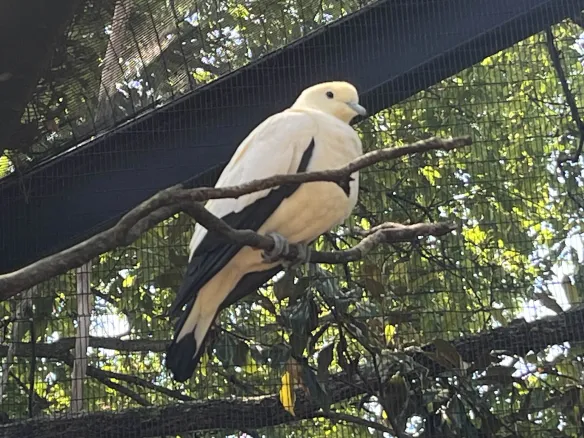

Things about me:
My name is Grace!
I'm a double major in Graphic Design and Computer Science.
I'm currently very addicted to a video game called warframe.
I enjoy listening to music, video games, trivia, and reading.
My favorite books are:
- The Secret Garden by Frances Hodgson Burnett
- The Book Thief by Markus Zusak
I've chosen to give the header and footing text background colors, as i want these to stand out. It would preferably go to the edge of the screen but I'm still figuring out how to do that. I've chosen Helvetica for the body text, and times for the text headers. Things are purple because i enjoy the color purple.
The chosen message (Joke):
How do lumber jacks keep track of how many trees they've cut down?
They keep a log.
The chosen pictures:

Ermines. Not a picture taken by myself, just one of my favorite pictures.
A pied imperial pigeon. I took this picture at the Cincinnati zoo. Pigeons are one of my favorite animals, i just think they're cute.